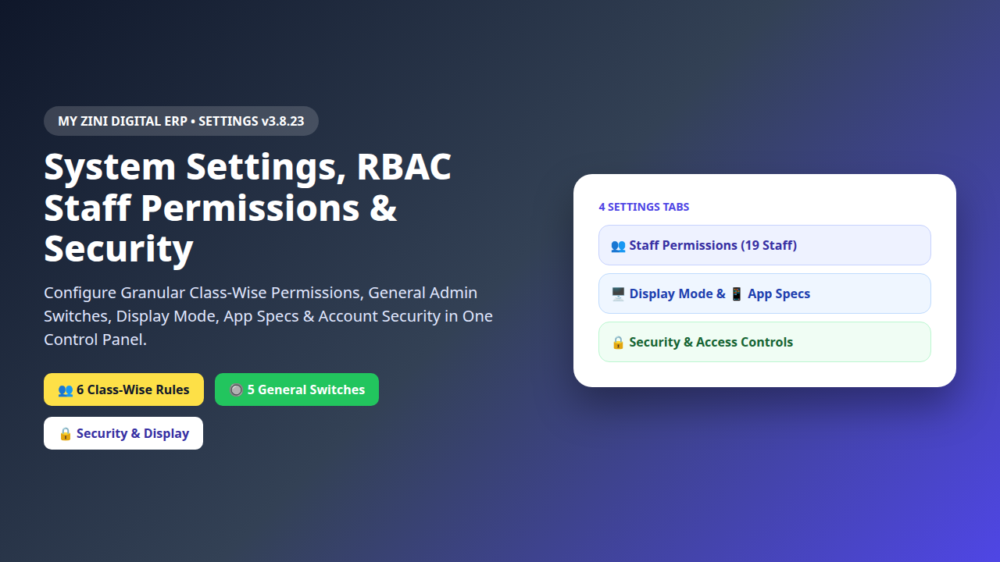
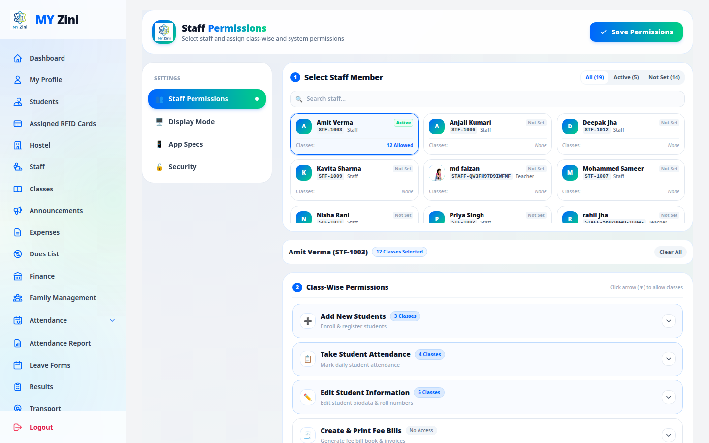
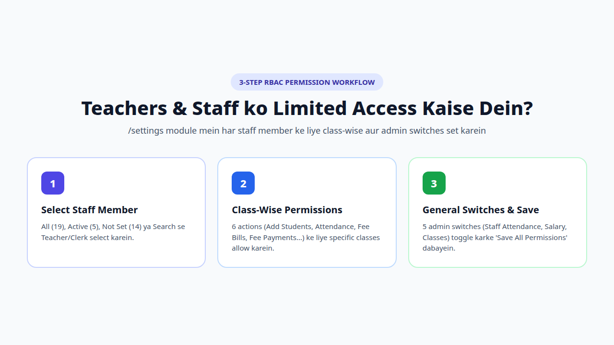
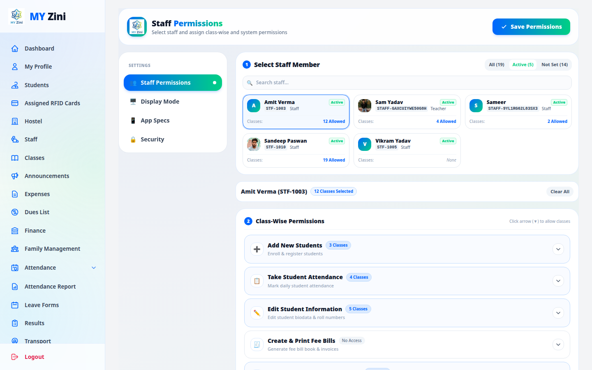
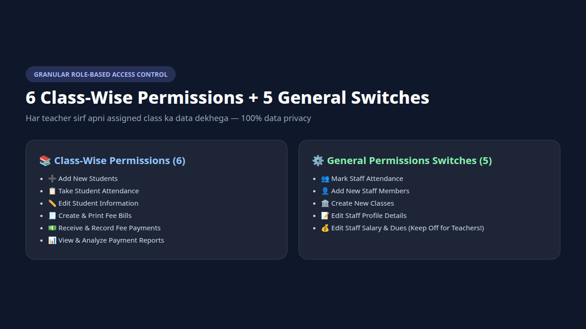
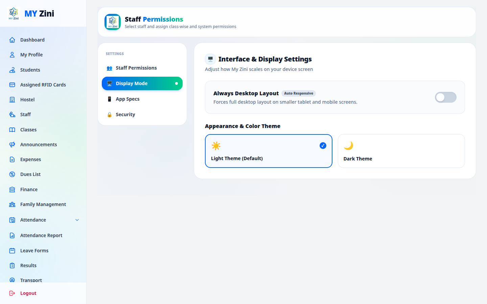
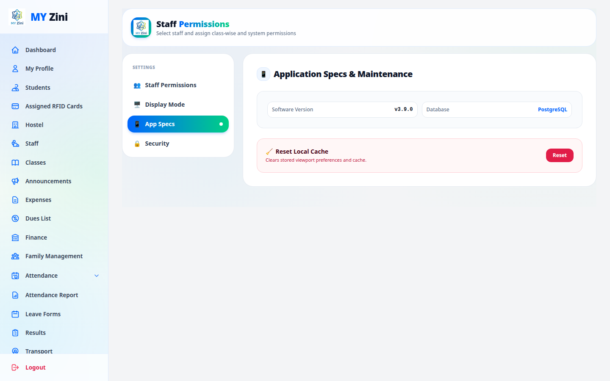
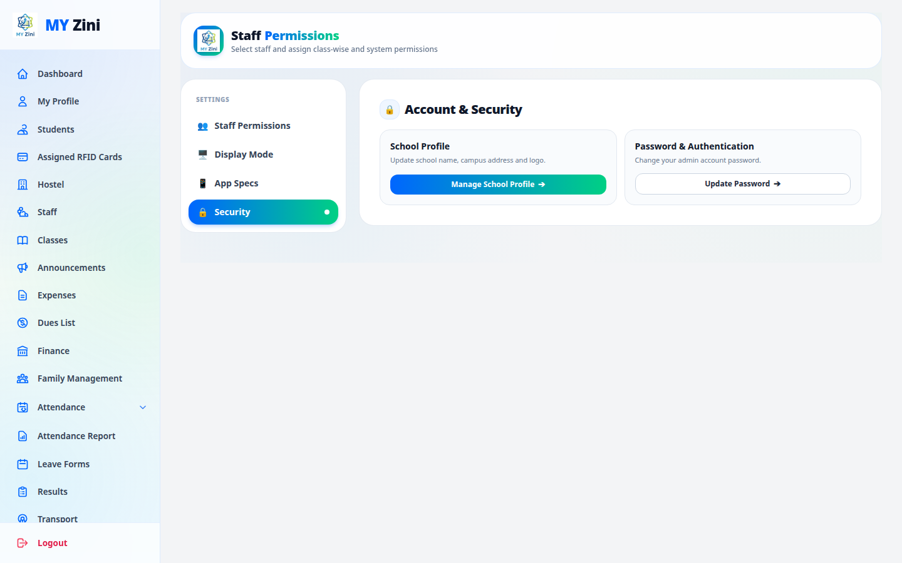
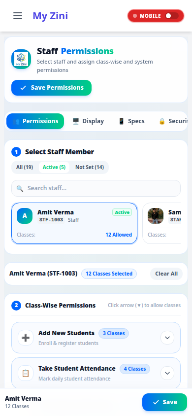
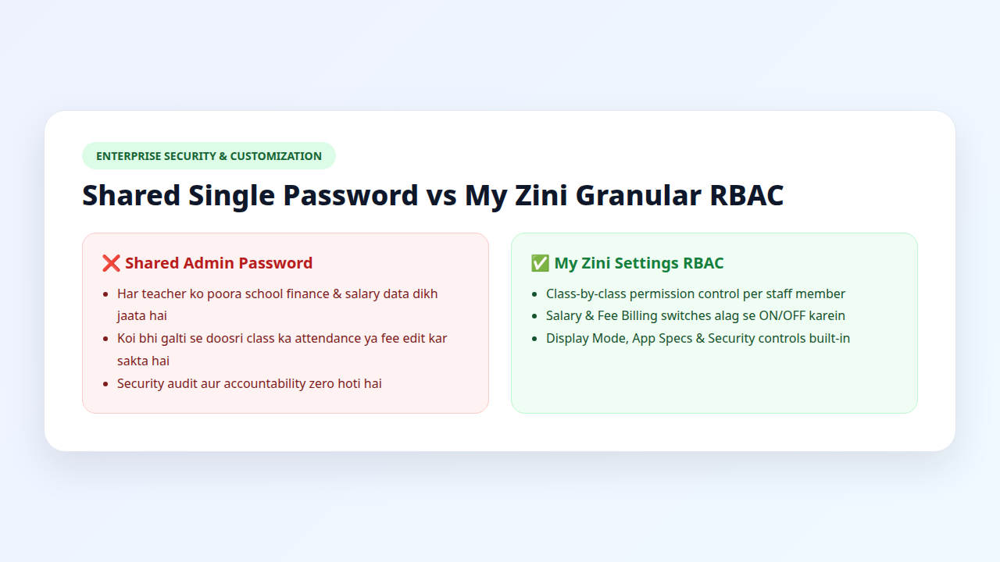

My Zini Digital ERP mein System Settings, Staff Permissions (RBAC), Display Mode aur Security Kaise Configure Karein? (Hinglish Guide)
Ek bade school mein har teacher ya office clerk ko poora Admin access dena bilkul surakshit nahi hota — Class 5 ka teacher sirf Class 5 ki attendance le, accountant sirf fee collection dekhe, aur kisi ko bhi bina permission ke staff salary edit karne ka haq na ho! Isi granular Role-Based Access Control (RBAC) aur app customization ke liye My Zini Digital ERP mein Settings (/settings) panel diya gaya hai. Is Hinglish guide mein humne live portal par iske sabhi 4 tabs (Staff Permissions, Display Mode, App Specs, aur Security) ko test karke poora step-by-step walkthrough तैयार kiya hai.

⚡ TL;DR — Quick Summary (AI & Reader Snapshot)
- Route: Sidebar ke bottom par
Settings(https://myzini.digitalerp.shop/settings). - 4 Main Tabs:
👥 Staff Permissions,🖥️ Display Mode,📱 App Specs, aur🔒 Security. - Staff Permissions (RBAC): 19 Staff list (
All,Active (5),Not Set (14)) + 6 Class-Wise Permissions + 5 General Switches +Clear All&Save All Permissions. - Display Mode:
Always Desktop LayoutvsAuto Responsive+☀️ Light Theme (Default)vs🌙 Dark Theme. - App Specs & Security: Software Version (
v3.9.0), Database (PostgreSQL),🧹 Reset Local Cache,Manage School Profile, aurUpdate Password.
1. Staff Permissions (RBAC): Step 1, Step 2 (Class-Wise) aur Step 3 (General Switches)
/settings kholte hi default tab 👥 Staff Permissions open hota hai. Yahan aapko 3 clean steps mein permissions assign karne ka system milta hai:
- Step 1 — Select Staff Member: Search box (
Search staff...) aur 3 filter pills:All (19),Active (5),Not Set (14). Har card par staff ka naam, status badge (Active / Not Set), Staff ID (e.g.STF-1003), Role (Staff / Teacher) aur allowed classes count (e.g.Classes: 12 Allowed) dikhta hai. - Step 2 — Class-Wise Permissions (6 Rules): Kisi bhi rule ke arrow (▼) par click karke aap select kar sakte hain ki yeh staff kaun-kaun si classes par action le sakta hai:
➕ Add New Students,📋 Take Student Attendance,✏️ Edit Student Information,🧾 Create & Print Fee Bills,💵 Receive & Record Fee Payments, aur📊 View & Analyze Payment Reports. - Step 3 — General Permissions (5 Switches): System-wide admin switches jinhe aap
AllowedyaOfftoggle kar sakte hain:👥 Mark Staff Attendance,👤 Add New Staff Members,🏛️ Create New Classes,📝 Edit Staff Profile Details, aur💰 Edit Staff Salary & Dues.






2. Display Mode, App Specs aur Security Tabs ki Poori Jankari
Staff Permissions ke alawa /settings mein 3 aur zaroori tabs milte hain jo har device par aapka experience smooth aur secure banate hain:
- 🖥️ Display Mode (Interface & Display Settings): Yahan aap screen scaling set kar sakte hain: Always Desktop Layout vs Auto Responsive (Forces full desktop layout on smaller tablet and mobile screens). Saath hi Appearance & Color Theme mein ☀️ Light Theme (Default) ya 🌙 Dark Theme choose kar sakte hain!
- 📱 App Specs (Application Specs & Maintenance):
Yahan live system specs dikhte hain:
Software Version: v3.9.0aurDatabase: PostgreSQL. Agar kabhi viewport ya local browser cache atak jaaye, toh 🧹 Reset Local Cache (Clears stored viewport preferences and cache) ke aage Reset button milta hai. - 🔒 Security (Account & Security):
Yahan 2 direct cards milte hain: School Profile (
Manage School Profile ➔— school name, campus address aur logo update karne ke liye) aur Password & Authentication (Update Password ➔— admin password change karne ke liye).



3. Mobile Responsive Settings aur Shared Password se Tulna
Mobile phone (390px) par bhi Settings ke chaaron tabs (👥Permissions, 🖥️Display, 📱Specs, 🔒Security) compact pill bar ke roop mein upar dikhte hain taaki Principal chalte-phirte kisi bhi teacher ki permission update kar sakein.


Quick Reference Table: /settings Module Cheat Sheet
| Tab Name | Main Options | Kab Use Karein? |
|---|---|---|
| 👥 Staff Permissions | 6 Class-Wise Rules + 5 General Switches + Clear All | Teachers aur Clerks ko limited role access dene ke liye |
| 🖥️ Display Mode | Always Desktop Layout / Auto Responsive + Light/Dark Theme | Mobile/Tablet scaling aur Dark Theme set karne ke liye |
| 📱 App Specs | Version (v3.9.0), PostgreSQL, Reset Local Cache | System info dekhne ya local cache clear karne ke liye |
| 🔒 Security | Manage School Profile + Update Password | Admin password badalne aur profile update karne ke liye |
Frequently Asked Questions (FAQs)
1. Agar kisi Teacher ko sirf Class 5 ki attendance lene ka access dena ho toh kaise karein?
👥 Staff Permissions tab mein us teacher ko select karein, Step 2 mein 📋 Take Student Attendance ke arrow par click karke sirf Class 5 tick karein, baaki sabhi options No Access ya Off rakhein, aur Save All Permissions daba dein.
2. "Not Set (14)" aur "Active (5)" badges ka kya matlab hai?
Active (5) woh staff members hain jinke liye aapne permissions configure karke save kiye hue hain (jaise Amit Verma, Sam Yadav, Sandeep Paswan). Not Set (14) ka matlab hai ki un staff members ko abhi tak koi special ERP permission assign nahi ki gayi hai.
3. "💰 Edit Staff Salary & Dues" switch ko Off rakhna kyun zaroori hai?
Yeh ek sensitive payroll control hai! Normal teachers aur receptionists ke liye ise hamesha Off rakhein taaki koi bhi staff member apni ya doosron ki salary aur absent fines ko edit na kar sake. Ise sirf Principal ya Senior HR ke liye Allowed karein.
4. "Always Desktop Layout" aur "Auto Responsive" mein kya farq hai?
Auto Responsive mobile aur tablet screen ke hisab se layout ko automatically stack karta hai (padhne mein aasan). Lekin agar aap tablet par bhi full wide spreadsheet-style tables dekhna chahte hain, toh Always Desktop Layout select kar sakte hain.
5. "🧹 Reset Local Cache" button kab use karna chahiye?
Agar kabhi layout toggle karne ke baad screen sahi scale na ho rahi ho ya purana cached UI dikh raha ho, toh 📱 App Specs tab mein jakar Reset dabane par aapke browser ki local preferences clean ho jaati hain (aapka cloud database data bilkul safe rehta hai).
6. Kya Dark Theme poore ERP par apply hoti hai?
Haan! 🖥️ Display Mode ke andar Appearance & Color Theme mein 🌙 Dark Theme select karne par raat mein kaam karne wale admins aur accountants ko aankhon par kam strain padta hai.
7. "Clear All" button kya karta hai?
Agar koi staff member school chhod kar jaa raha ho ya unka department badal raha ho, toh unke naam ke upar maujood Clear All button dabakar aap unki saari assigned classes aur permissions ek click mein reset kar sakte hain.
8. Admin account ka password kaise badlein?
🔒 Security tab open karein aur Password & Authentication card par Update Password ➔ click karein. Har 3–6 mahine mein password update karna school data security ke liye best practice hai.
9. Apne school ke liye My Zini Digital ERP kaise shuru karein?
Aap Digital ERP Registration Form par jaakar sirf ₹100 Registration Fee ke saath apna school register kar sakte hain aur Role-Based Staff Permissions setup kar sakte hain.
10. "Receive & Record Fee Payments" aur "Create & Print Fee Bills" alag-alag kyun hain?
Bahut se schools mein ek clerk sirf Fee Bills/Dues print karke parents ko deta hai (Create & Print Fee Bills), jabki cash sirf senior cashier collect karta hai (Receive & Record Fee Payments). Alag rules hone se fraud aur cash mismatch ka risk khatam ho jaata hai.
11. Kya "Database: PostgreSQL" ka matlab hai hamara data enterprise-grade hai?
Haan! PostgreSQL duniya ke sabse reliable aur ACID-compliant relational databases mein se ek hai, jo Row Level Security (RLS) ke saath aapke school ke fee records aur student profiles ko 100% safe rakhta hai.
12. "Save Permissions" (top-right) aur "Save All Permissions" (bottom) mein kya antar hai?
Dono buttons selected staff member ki Class-Wise aur General permissions ko cloud database mein save karte hain — ek top header par aur ek bottom bar par diya gaya hai taaki aapko upar-neeche scroll na karna pade.
13. Kya naya staff add karne ke baad woh turant Settings ki list mein dikhta hai?
Haan! Jaise hi aap /staff par naya teacher ya clerk add karte hain, woh turant /settings ke Not Set tab mein aa jaata hai jahan se aap unhe permissions de sakte hain.
14. "View & Analyze Payment Reports" permission kis staff ko deni chahiye?
Yeh permission sirf Senior Accountant, Vice Principal, ya Fee In-charge ko deni chahiye taaki financial analytics aur dues reports sirf authorized logon tak hi seemit rahein.
15. Kya Settings mein "Manage School Profile" dabane se /profile khulta hai?
Haan! Security tab ke andar Manage School Profile ➔ shortcut aapko seedha /profile par le jaata hai jahan se aap school name, address aur GPS location manage kar sakte hain.
16. "Mark Staff Attendance" aur "Add New Staff Members" General Switches kis staff ko dene chahiye?
Yeh dono switches HR Coordinator, Vice Principal, ya Office Superintendent ko dene chahiye. Normal subject teachers ke liye inhe Off rakhna behtar hota hai taaki koi bhi teacher doosre teachers ki attendance ya salary record na badal sake.
17. "Create New Classes" aur "Edit Staff Profile Details" switches ka kya impact hota hai?
Agar Create New Classes switch Allowed hai, toh woh staff /classes par nayi classes aur monthly tuition fee structure bana sakta hai. Isi tarah Edit Staff Profile Details se HR staff ke phone number, address aur designation update kar sakta hai.
18. Kya ek hi staff member ko alag-alag permissions mein alag classes assign ki ja sakti hain?
Haan bilkul! Live portal par Amit Verma (STF-1003) ke profile mein dekha gaya ki unhe Add New Students mein 3 classes, Take Student Attendance mein 4 classes, Edit Student Information mein 5 classes, aur View & Analyze Payment Reports mein 1 class allow ki gayi hai — yani har permission completely independent hai!
19. Sidebar mein "Settings v3.8.23" aur App Specs mein "Software Version v3.9.0" kyun dikhta hai?
Sidebar badge UI module build version (v3.8.23) darshata hai, jabki 📱 App Specs tab ke andar core cloud engine ka latest release version (v3.9.0) aur PostgreSQL database status dikhai deta hai.
20. Agar koi staff member apni login ID se login kare aur "No Access" wale module khole toh kya hoga?
System RBAC permissions aur PostgreSQL Row Level Security (RLS) dono levels par check karta hai. Jin classes ya features par staff ko permission nahi hai, woh unhe bilkul access ya edit nahi kar paayenge.
21. "Search staff..." box mein kya-kya search kiya ja sakta hai?
Aap 19+ staff members ki list mein kisi bhi teacher ya clerk ka Full Name (jaise Amit, Sneha, Sandeep) ya unka Staff ID (jaise STF-1003) type karke turant unka permission card dhoondh sakte hain.
22. Kya "Edit Student Information" permission dene se teacher student ki fees bhi badal sakta hai?
Edit Student Information sirf student ke biodata, parent contact aur roll numbers edit karne ke liye hai. Fee collection aur fee bills ke liye alag se Create & Print Fee Bills aur Receive & Record Fee Payments permissions di gayi hain.
23. Kya Dark Theme set karne par baaki sabhi users ka screen bhi Dark ho jaata hai?
Nahi! Display Mode settings (Light/Dark Theme aur Always Desktop vs Auto Responsive) aapke apne browser/device ke local preferences mein save hoti hain, isliye har user apni pasand ka theme rakh sakta hai.
24. "Reset Local Cache" karne ke baad kya dubara login karna padta hai?
Reset Local Cache sirf stored viewport aur UI preferences ko clear karta hai taaki screen scaling fresh ho jaaye. Aapke cloud database records (students, fees, staff) par iska koi asar nahi padta.
25. School Admin ko apna password kitne dinon mein badalna chahiye?
Security best practices ke mutabik har 90 din (3 mahine) mein ya jab bhi koi senior admin/accountant school chhod kar jaaye, tab 🔒 Security → Update Password ➔ se naya strong password set karna chahiye.
26. "12 Classes Selected" header ka kya matlab hota hai jab koi staff select hota hai?
Jab aap kisi staff (jaise Amit Verma • STF-1003) par click karte hain, toh right panel ke top par 12 Classes Selected dikhta hai — iska matlab hai ki unki sabhi 6 Class-Wise Permissions ko milakar kul 12 class-level access slots currently enabled hain.
27. Kya "Auto Responsive" mode mein mobile phone par bhi Staff Permissions edit ki ja sakti hain?
Haan bilkul! Live mobile view (390px) mein humne verify kiya ki top par 4 compact tabs (👥Permissions, 🖥️Display, 📱Specs, 🔒Security) aur neeche poori staff list cleanly scroll hoti hai jisse Principal phone se bhi permissions toggle kar sakte hain.
28. Kya "Staff" aur "Teacher" roles ke liye alag-alag permissions milti hain?
Settings mein har staff member ke card par unka role tag (Staff ya Teacher) dikhta hai, aur Principal dono ke liye apni zaroorat ke hisab se same 6 Class-Wise aur 5 General Switches customize kar sakte hain.
29. Kya naye session ki shuruwat mein sabhi Teachers ki Class-Wise Permissions update karni chahiye?
Haan bilkul! Jab naye session mein teachers ko nayi classes allot hoti hain, toh Principal sirf 5 minute mein 👥 Staff Permissions open karke purani classes untick aur nayi classes allow karke Save All Permissions kar sakte hain — isse poora academic year bina kisi data leakage ke smoothly chalta hai.
Real School Scenarios: Settings & RBAC ka Smart Use
1. Class Teacher Setup (Zero Finance Access)
Class teachers ke liye sirf Take Student Attendance mein unki apni class allow karein aur sabhi Fee/Salary switches ko Off rakhein.
2. Fee Counter Cashier Setup
Cashier ko sabhi classes ke liye Receive & Record Fee Payments aur Create & Print Fee Bills allow karein, lekin Edit Staff Salary ko Off rakhein.
3. Staff Resignation Access Revoke
Kisi staff ke school chhodte hi Clear All dabakar Save karein — unka saara ERP access turant band ho jaata hai.
4. Tablet Users ke liye Desktop Mode
Office iPad/Tablet par bade finance tables dekhne ke liye Display Mode mein Always Desktop Layout switch karein.
Pro Tip: Har mahine ek baar Active (5) filter check karein taaki verify rahe ki sirf current working staff ke paas hi ERP permissions active hain aur kisi former employee ka access chalu nahi hai.